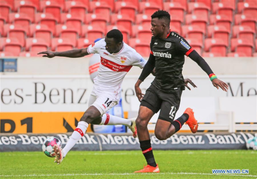

Hoeneß:
"Leider waren es nur die Spieler, die richtig gut waren"
Der VfB Stuttgart lieferte sich mit Leverkusen erneut einen wilden und mitreißenden Schlagabtausch beim 2:2. Die letzte Aktion der Partie verhinderte den Sieg der Schwaben, was Trainer Sebastian Hoeneß sichtlich auf die Palme brachte.
Wir haben insbesondere in der zweiten Halbzeit ein großartiges Spiel gemacht"
- lobte Sebastian Hoeneß bei Sky seine Mannschaft. "Leider waren es nur die Spieler, die richtig gut waren", sagte ein sichtlich genervter VfB-Coach und sprach danach vor allem über die Nachspielzeit.
"Wir haben gehört, dass immer noch 30 Sekunden draufgehen, wenn gewechselt wird",
- berichtete Hoeneß von seinem Austausch mit den Unparteiischen. Besonders bitter, denn die hatte sich der VfB mit der Hereinnahme von Pascal Stenzel (90.+2) ja selbst eingebrockt - ein folgenschwerer Wechsel